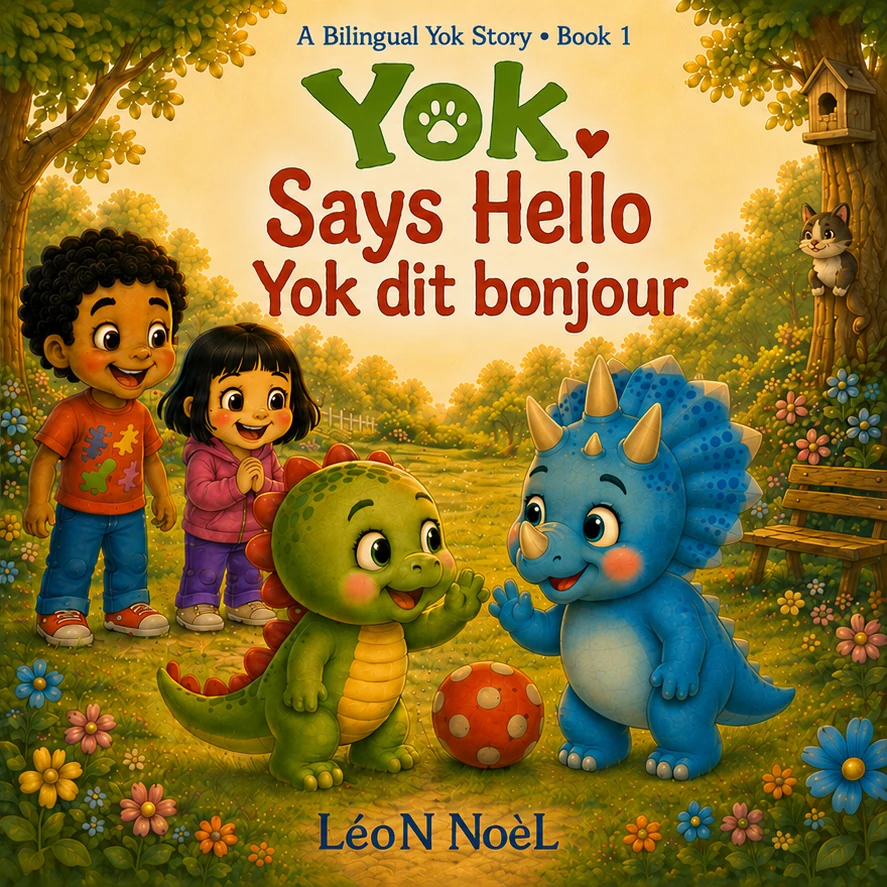
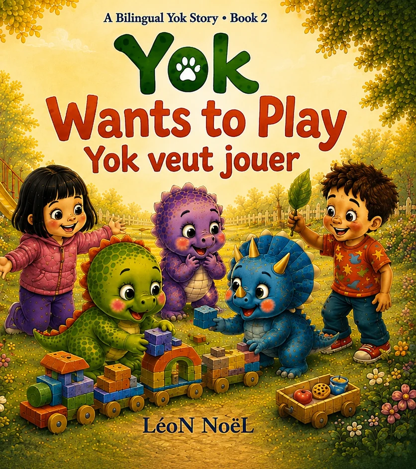
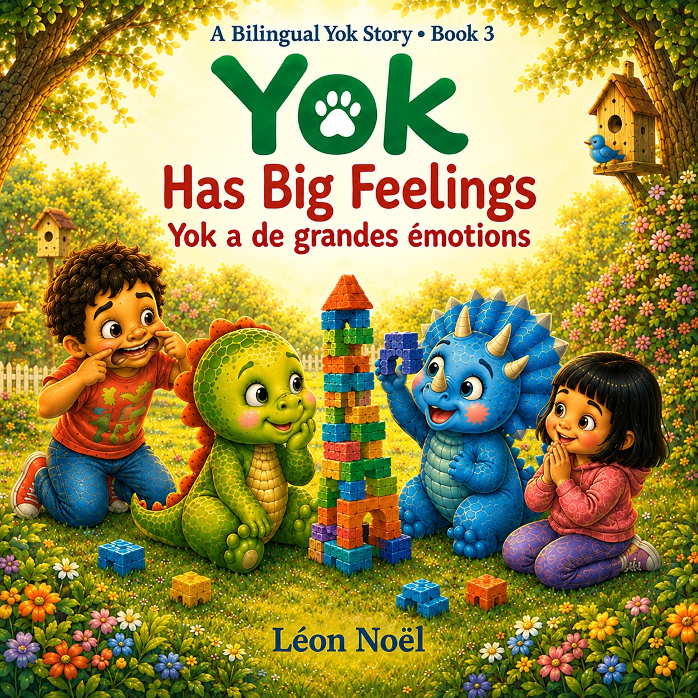
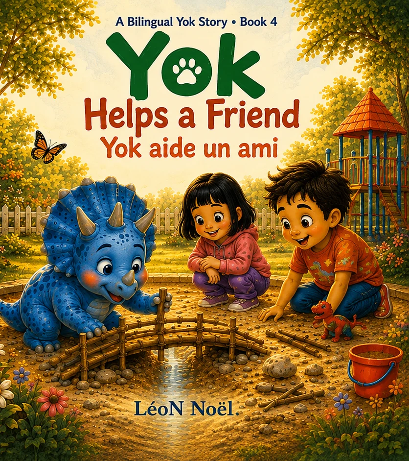
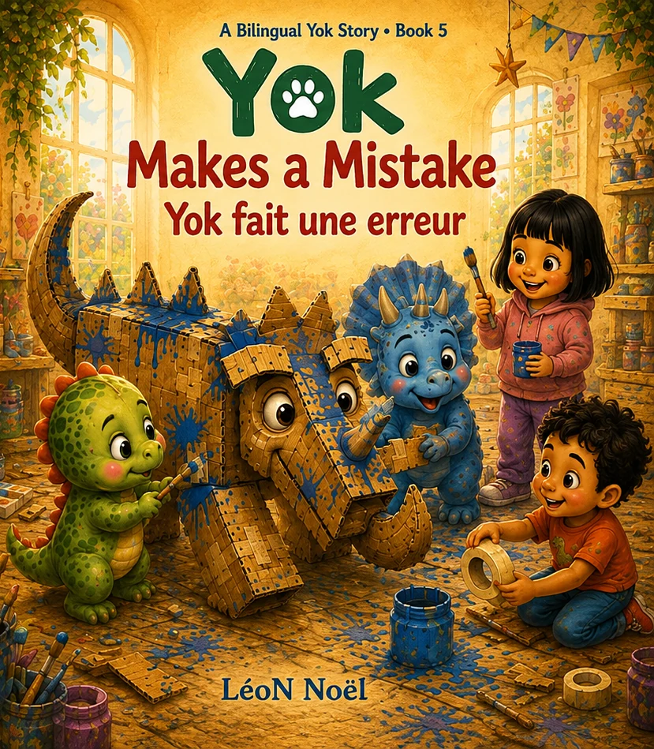
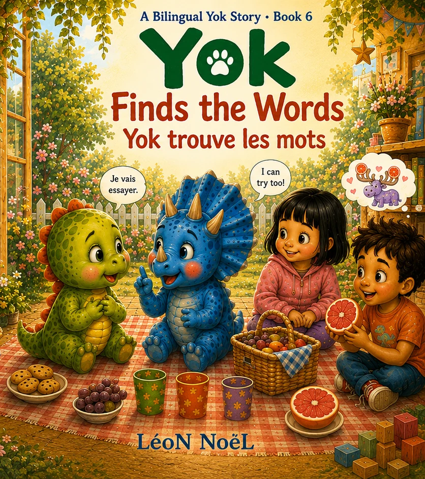

01
A Bilingual Yok Story · English + French
Friendship speaks more than one language.
Six new Yok adventures pair familiar emotional moments with gentle exposure to English and French.

The complete collection
Choose your next story.

02
03
04
05
06